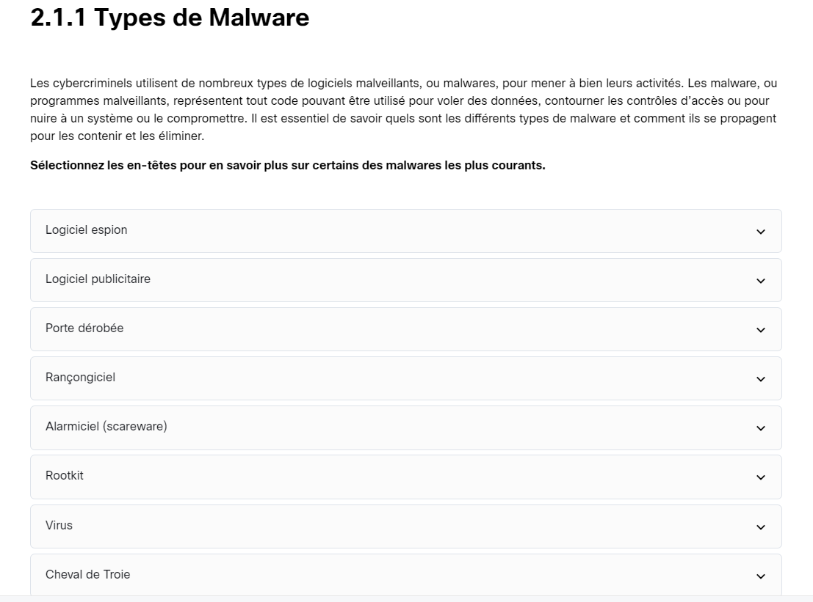
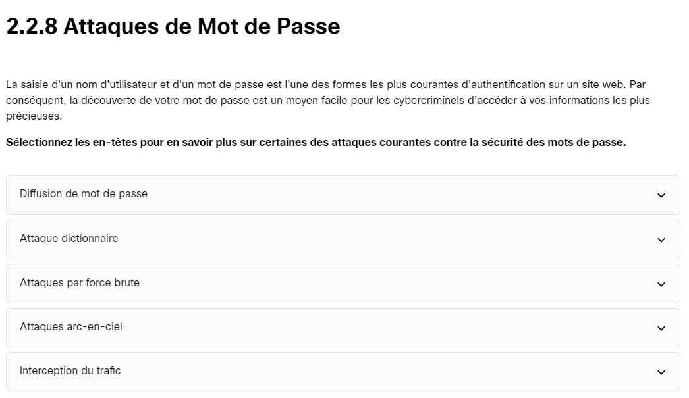

📘 Présentation
Cette formation aborde les bases de la cybersécurité : menaces courantes, bonnes pratiques, cryptographie, attaques de mots de passe, et plus encore.
Plateforme : 🎓 Cisco Networking Academy
Lien : Voir la formation

🎯 Objectifs de la formation
- Sensibiliser aux risques numériques actuels
- Comprendre les enjeux de la cybersécurité
- Adopter les bons réflexes en entreprise et à domicile
❓ Pourquoi cette formation ?
Dans le cadre de mon BTS SIO, j'ai choisi cette formation car la cybersécurité est un pilier essentiel de l’informatique moderne. Protéger les données, comprendre les menaces, et savoir réagir face à une attaque sont des compétences indispensables.
La certification Cisco est reconnue mondialement et constitue un atout professionnel important.
🛠️ Outils utilisés
- Plateforme Cisco Networking Academy
- Navigateur web (Chrome, Firefox)
- Ressources pédagogiques Cisco (vidéos, quizz, illustrations)
🧠 Compétences développées
- Comprendre les types de menaces (malware, phishing, ransomware...)
- Appliquer les bonnes pratiques de sécurité
- Analyser les risques liés aux réseaux et postes utilisateurs
- Découvrir le chiffrement et les pare-feux
🖼️ Notions illustrées
Politique de sécurité : Ensemble de règles pour protéger les ressources et utilisateurs.

📌 Types de malware
- Spyware : Logiciel espion qui collecte vos données personnelles à votre insu.
- Adware : Affiche des publicités non sollicitées.
- Backdoor : Donne un accès caché à un pirate.
- Ransomware : Chiffre vos fichiers et exige une rançon.
- Scareware : Fausse alerte pour vous pousser à télécharger un virus.
- Rootkit : Cache des éléments malveillants du système.
- Virus : Se propage et endommage le système.
🔐 Attaques de mots de passe
- Diffusion : Réutilisation ou partage de mot de passe.
- Dictionnaire : Essai de mots de passe communs.
- Force brute : Teste toutes les combinaisons possibles.
- Rainbow table : Base de hash précalculés.
- Interception réseau : Capture des identifiants sur le réseau.
🔚 Conclusion
Grâce à cette formation, j’ai acquis des bases solides en cybersécurité. Ce certificat témoigne de mon engagement dans un domaine stratégique que je souhaite approfondir.